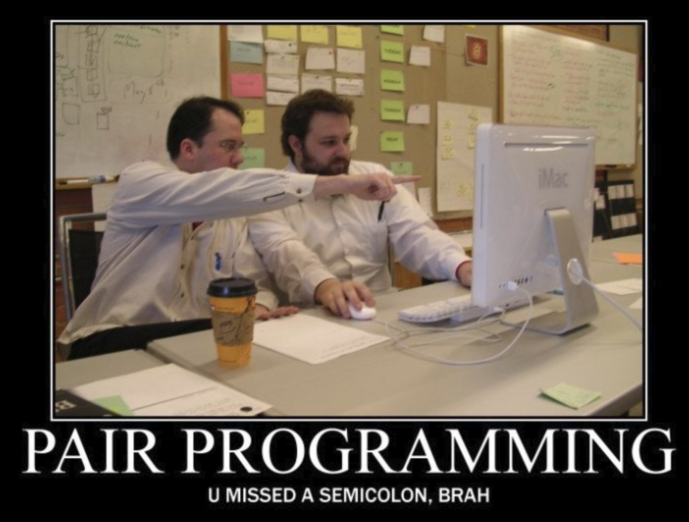

This project presents two datasets which pertain to Manhattan, NYC: taxi dropoffs, and big events.
The motivation for this project is to create an interactive research tool for the machine learning for mobility () group at DTU Transport. Currently, the group does a lot of manual labor to explore correlations between changes in taxi dropoffs and big events in NYC. This project provides a tool which relieves such manual labor. The tool will greatly help the group, by making it much easier and quicker to spot possible correlations, and thus accelerate future research.
The original taxi dataset comprises of about 120M rows of trip data, taken from the Open NYC website. Data features include pickup and dropoff location and time, as well as trip price. To avoid visual clutter, we focus on taxi dropoffs only in Manhattan during three months: April-June 2016. We extract dropoffs information, and aggregate it into hourly resolution.
The big events dataset was scraped from several online sources, mainly timeoutworld.com and eventful.com, and comprises of about 30K events in the aforementioned period. Data features include event title, location, and time. We focus the visualization on 11 large venues in Manhattan, including e.g. MoMA Museum and Beacon Theatre. For each event, we display only the event title and start time, because this is enough information for highlighting correlations with taxi dropoffs.
Our visualizations follow the style of an interactive partitioned posted, packed into one web-page.
Let us now detail which tools we use and why. We use the following Visual Narrative tools:
We also use the following Narrative Structure tools:
Following are the visualizations we use, and how they serve the data story of correlations between taxi dropoffs and big events.
On the bright side, we managed to yield a useful research tool, per the needs and requests of the Machine Learning for Mobility Group in DTU Transport. It is also nice that we kept visual clutter low, while letting the user access and additionally useful information interactively. We think that the tool effectively packs hundreds of thousand of data records into a well flowing display.
However, the tool can be further improved. We could display more than 3 months of data, if e.g. we use some scrolling mechanism. We could also display taxi pickups, not only dropoffs. Finally, the data for this project is preprocessed offline, and it would be a great to provide some online tool for processing new data, which Open NYC releases about twice a year.
Inon is a member of the group, and so came up with the project idea. Jacob implemented and stylized most parts of the timeline plots, while Inon implemented and stylized most parts of the other plots.
We mostly pair-programmed the entire project at Inon's office, where we shared one screen for data processing, data exploration, project planning, and webpage implementation.
Eventually, each of us either touched or reviewed nearly every line of code, so we are both well familiar with all aspects of this project.
